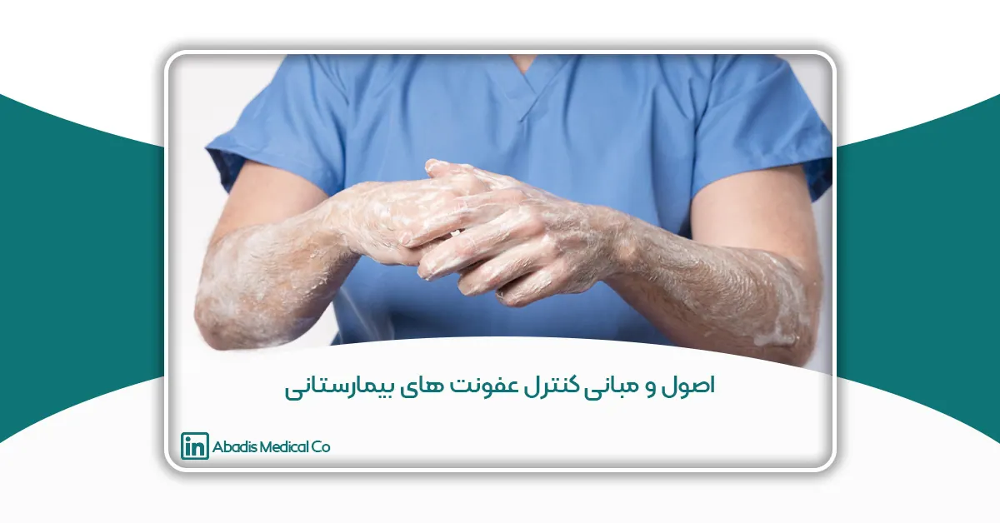
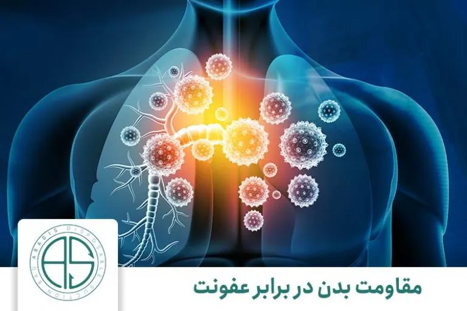
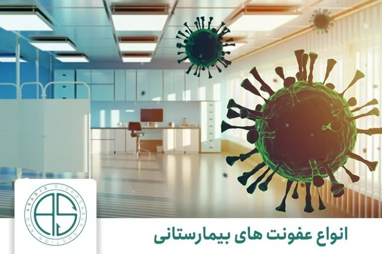
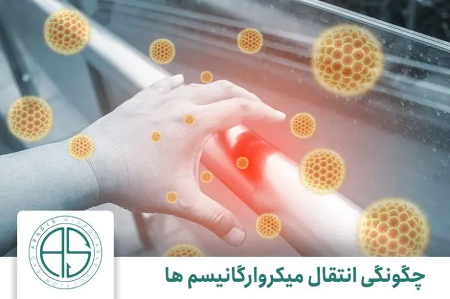

عفونت چیست؟
بشر از ابتدای آفرینش همواره درحال پیدا کردن راههایی جهت محافظت خود در مقابل عوامل طبیعی مثل سرما، گرما و بسیاری از عوامل بیماریزا و عفونتزا بوده و هدف وی بقای نسل خویش بوده است.
در تعریف لغوی عفونت، فاسد شدن یا برگشتن طعم چیزی بیان میشود؛ اما بهخاطر وجود ابعاد گسترده آن بهذکر برخی تعاریف تخصصی میپردازیم.
۱- اختلال در علائم حیاتی اعم از درجه حرارت و تغییر تعداد گلبولهای خون و بر هم زدن تعادل طبیعی بدن، توسط ارگانیزمهای بیماریزا
۲- استقرار عوامل متنوع بیماریزا شامل انواع باکتری، ویروس، قارچ و انگلها در بخشهای مختلف بدن میزبان
در نتیجه عفونت زمانی بروز میکند که عامل بیماریزا وارد بدن میزبان شده و با تحریک سیستم ایمنی باعث اختلال در عملکرد طبیعی بدن میشود.
لازم به ذکر است، حالت حاد بیماری زمانی اتفاق میافتد که عامل مهاجم بتواند به طور فعال و زنده در خارج از سیستم ایمنی بدن فرد باقی بماند. اما در صورتی که وارد سیستم ایمنی بدن شده و به جهت مقاومت در برابر انهدام خود، نقطهای از بدن میزبان را برای تجمع انتخاب کند، شاهد حالت مزمن بیماری خواهیمبود.
پس در ابتلا به یک عفونت، نه تنها وجود قابلیت پذیرش بیماری در انسان و کاهش مقاومت عمومی بدن او لازم است، بلکه میکروب مهاجم نیز باید از قدرت بیماری زایی کافی برخوردار باشد. تا بتواند شرایط مناسب و مساعدی برای ابتلاء به بیماریها را فراهم نماید.
چگونگی مقاومت بدن در برابر عفونت

عوامل مهمی برای مقاومت بدن در برابر عفونت تاثیر گذارند.
بدن ما برای دفاع در برابر عوامل ایجادکننده عفونت یا همان میکروارگانیسمها (که مهمترین آنها عبارتاند از: ویروسها، باکتریها، ریکتزیاها، قارچها و انگلها) مجهز به موانع بازدارنده و سیستمهای دفاعی قوی به شرح زیر میباشد:
۱- پوست: به دلیل دارا بودن PH ویژه، اسیدهای چرب و لیزوریمها اولین و قویترین سد دفاعی بدن است.
۲- سطوح مخاطی: معده با تغییرات PH و دستگاه فوقانی تنفس با حرکات مداوم مژکها و ترکیب ویژه ترشحات بزاق و مجاری مختلف بدن عمل دفاعی انجام میدهد.
۳- سیستم ایمنی: عملکردهای گوناگون سیستم دفاعی در خارج از بدن برای جلوگیری از عوامل عفونتزا نقش خود را به خوبی ایفا میکنند. اما در خارج از بدن عوامل بیماری زای متعددی وجود دارند که ممکن است در صورت بروز اختلال در هر یک از مکانیسمهای دفاعی بدن، بتوانند به آن دخول نموده و ایجاد بیماری کنند.
عوامل بیماریزا برای ورود به بدن ما یکی از راههای زیر را انتخاب میکنند:
۱- تماس مستقیم: از طریق ترشحات بدن همچون خلط، چرک، ادرار و ترشحات زخمهای باز.
۲- تماس غیر مستقیم: تماس با وسایل و ابزارهای آلوده به عوامل بیماریزا مانند ظروف، رخت خواب و ملحفه، تجهیزات و ابزارهای طبی مشترک و غیره.
۳- سرایت از طریق حاملین و ناقلین میکروارگانیسمها: شامل انسان، حشرات و برخی عوامل بیماری زای محیطی (گرد و غبار / آب و هوا) که به راحتی عفونتها را از فردی به فرد دیگر انتقال میدهند.
تعریف عفونت بیمارستانی
سقراط سالها پیش در کتابی درباره عفونتهای زایمانی و علل شیوع آن مطالبی نوشته بود. اما شناخت گسترده و دقیق انواع عفونتها در چند ده سال اخیر مرهون ساخته شدن آسایشگاهها و بیمارستانهای خاصی برای بیماریهای مرگآوری همچون سل، آبله، طاعون و جزام میباشد.
عفونت بیمارستانی (Infections Nasocomial) به عفونتی اطلاق میشود که بیمار در زمان بستری بودن به آن دچار نبوده و ۴۸ تا ۷۲ ساعت بعد از پذیرش بیمار در بیمارستان ایجاد میشود، به شرط آنکه در دوره کمون آن نبوده باشد.
عفونتهای بیمارستانی یک مشکل جدی مراکز بهداشتی درمانی میباشند و هرساله هزینههای زیادی را به بیماران و مراکز بهداشتی درمانی تحمیل میکنند. در حال حاضر در کشورهای پیشرفته میزان این عفونتها حدود ۱۰٪ موارد بستری و در کشورهای در حال توسعه حدود ۲۵٪ تخمینزده میشود.
زمانی بیماران ترخیصشده در گروه مبتلایان به عفونت بیمارستانی گنجانده میشوند که:
الف) ۷ الی ۱۰ روز پس از مرخص شدن بیمار که به علت داخلی بستری بوده و هیچ نوع جراحی خاصی بر روی وی انجام نشدهاست.
ب) تا ۳۰ روز پس از ترخیص به علت جراحی، در صورتی که ایمپلنت برای مریض کار گذاشته نشدهباشد. مانند: لاپاراتومی، آپاندکتومی و هرنی.
ج) تا یک سال بعد از جراحی که برای بیمار ایمپلنت کار گذاشته شدهباشد. همچون جراحیهای ارتوپدی که در آن پیچ، پین، پلاک و … در بدن بیمار کار گذاشته میگردد.
به طور کلی سه گروه از افراد در معرض ابتلاء به عفونتهای بیمارستانی هستند:
۱- فرد بیمار
۲- کارکنان سیستم درمانی
۳- افراد جامعه
هر یک از اعضای بدن انسان میتواند دچار عفونت بیمارستانی گردد ولی در این بین عفونت دستگاه ادراری با سهم ۴۲% در ردهی اول قرار دارد. پس از عفونت ادراری، عفونتهای ناشی از زخم جراحی با ۲۴٪، عفونت دستگاه گردش خون با ۵ الی ۱۰٪ و عفونت دستگاه تحتانی با ۱۱٪ و عفونت پنومونی با ۱۵٪ شایعترین انواع عفونت بیمارستانی هستند.
در مطالعات ﺍﻧﺠﺎﻡ ﺷﺪﻩ، ﻋﻔﻮﻧﺖ ﺍﺩﺭﺍﺭی، ﺷﺎﻳﻊ ﺗﺮﻳﻦ ﻭ ﭘﻨﻮﻣﻮنی ﻛﺸﻨﺪﻩﺗﺮﻳﻦ ﻋﻔﻮﻧﺖﻫﺎی ﺑﻴﻤﺎﺭﺳﺘﺎنی ﻣﺤﺴﻮﺏ میگردند. با این حال در بسیاری ﺍﺯ ﻣﺮﺍﻛﺰ بهداشتی درمانی، ﻋﻔﻮﻧﺖ ﺑﻴﻤﺎﺭﺳﺘﺎنی ﺩﺳﺘﮕﺎﻩ ﮔﺮﺩﺵ ﺧﻮﻥ، ﻋﻠﺖ ﺍﺻلی ﻣﺮﮒ ﺑﻴﻤﺎﺭﺍﻥ میﺑﺎﺷﺪ.
در جدول۱ ریسک فاکتورهای مهم در هر بخش نشان داده شده است.
| Risk factors | site |
| Advanced age
Female sex Breaks in closed system Failure of personnel hand washing Urinary tract or catheterization Instrumentation Severity of illness |
Urinary Tract |
| Underlying disease
Altered mental status Diabetes Alcoholism Intubation Mechanical ventilation Respiratory therapy equipment Tracheostomy Malnutrition Thoracoabdominal surgery Histamine ll blockers, antacids Severity of illness |
Pneumonia |
| Extremes of age
Underlying disease Immunosuppression Burns Intravasclar devices Severity of illness |
Bloodstream (primary) |
| Advanced age
Malnutrition Wound classification Prosthesis Type of procedure Preoperative shaving Severity of illness |
Surgical wound |
تقسیم بندی عفونتهای بیمارستانی
عفونتهای بیمارستانی براساس تعاریف ارائه شده توسط سازمانهای جهانی مانند سازمان (Prevention and Control Disease for Center) CDC به سه نوع ذیل تقسیم میگردند:
– عفونت بیمارستانی اسپورادیک (شخصی): شامل عفونتهایی است که به ندرت، بیقاعده و بدون هیچ الگوی مشخصی رخ میدهند.
– عفونت بیمارستانی آندمیک (بومی): شامل عفونتهایی است که دارای منبع آندوژن (درونزا) بوده و به طور مداوم و با تناوب قابل پیشبینی در یک منطقه جغرافیایی، جمعیت و دوره زمانی خاص رخ میدهند.
– عفونت بیمارستانی اپیدمیک (همه گیر): نشان دهنده یک افزایش مشخص و دور از انتظار در وقوع بیماری است و دارای منبع اگزوژن (برونزا) میباشد.
بیشتر عفونتهای بیمارستانی آندمیک هستند، بنابراین با یک تناوب قابل پیشبینی رخ داده و ارتباطی با سایر عفونتهای بیمارستانی که در مراکز درمانی دیگر رخ میدهند، ندارند. چنین عفونتهایی اغلب منبع آندوژن داشته و در افرادی که دچار نقص سیستم ایمنی بوده یا سالمندان رخ میدهند.
عفونتهای اپیدمیک که به طور موقت روی میدهند، دارای یک منبع مشخص (اگزوژن) بوده و از طریق انتقال از شخصی به شخص دیگر گسترش مییابند. این عفونتها اکثراً در حین مراحل درمانی یا استفاده از ابزار خاص انتقال مییابند. اگرچه عفونتهای اپیدمیک عموماً بیقاعده اتفاق میافتند ولی در بعضی بخشهای خاص مثل واحدهای مراقبتهای ویژه (ICUs) درصد قابل توجهی از موارد، ممکن است بصورت خوشهای ظاهر شوند.
به هرحال افزایش عفونتهای خاص مانند عفونتهای بخش جراحی با گروه A استرپتوکوکها (SSI) یا عفونتهای جریان خونی (BSIs) که عامل آنها ارگانیسمهای غیر معمول گرم منفی هستند، احتمالا بصورت اپیدمیک بروز میکند. توصیه شدهاست که در صورت وقوع حتی یک مورد از این عفونتها، احتمال اپیدمی از نظر دور نشود، زیرا این قبیل عفونتها بندرت بصورت اسپورادیک (تک گیر) ظاهر میشوند.
انواع عفونت بیمارستانی

عفونتهای بیمارستانی طی دورهای به بیماران منتقل میشوند.
عفونتهای بیمارستانی انواع متفاوتی دارند که از مهمترین آنها میتوان به موارد زیر اشاره نمود:
- عفونت زخم عمل جراحی
- عفونت خون یا سپسیس
- عفونتهای ادراری
عفونت زخم جراحی
به عنوان یکی از عفونتهای بیمارستانی، ناشی از عفونت باکتری میباشد. این آلودگی عموماً در حین جراحی و یا پس از آن ایجاد مشکل میکند. این مشکلات شامل، آسیب در عضو، عفونت در خون، نقص در فرایند محل جراحی و حتی مرگ فرد، میشود.
به طور معمول عوارض شایع در این عفونت ۵ تا ۱۰ روز پس از جراحی بروز میکند، ولی در برخی از موارد این علائم میتواند بعد از چند هفته نیز بروز کند. از مهمترین این علائم میتوان به چرک و تجمع سایر مایعات در اطراف بخیهها، درد و قرمزی اطراف زخم جراحی و در برخی از موارد
تب نیز، اشاره نمود. بروز این علائم دلایلی دارد. این دلایل عمدتاً ناشی از برخی از باکتریها شامل استرپتوکوکها، استافیلوکوکها یا سایر میکروبها میشود.
بروز و خطر این میکروبها بسیار زیاد است؛ به طوری که علیرغم انجام روشهای ضدعفونیکننده جدید قبل از عمل جراحی و مراقبتهای سطح بالای پس از عمل، این عفونتها همچنان فرصت بروز را پیدا میکنند.
برخی از موارد زمینهای در بدن و ویژگی بیماران، میتواند افراد را در معرض بیشتر این عفونت قرار دهد. برای مثال افراد مسن بیشتر از جوانان دچار این نوع عفونت میشوند. تغذیه ناکافی و ناصحیح، هر گونه بیماری مزمن به ویژه دیابت، استفاده از داروهای سرکوبگر دستگاه ایمنی، جراحی، دستگاه گوارش، چاقی بیش از حد افراد و ابتلا به بیماری صرع، میتواند احتمال ابتلا به عفونتهای این چنینی در بیمارستان را افزایش دهد.
برای پیشگیری از ابتلا به این عفونت، راههای زیر در نظر گرفته میشود:
• تجویز آنتیبیوتیک قبل از عمل جراحی در زمان مناسب
• اطمینان از انتخاب بهترین وضعیت ممکن قبل از جراحی، برای بیمار
• استفاده از محلولهای ضدمیکروبی در اطراف برش جراحی
• استفاده از آنتیبیوتیکهای خاص مثل نئومایسین پیش از جراحی در دستگاه گوارش برای استریل کردن لوله گوارشی
• رعایت نکات استریل مانند از بین بردن هر نوع باکتری یا سایر میکروارگانیسمها، مثل ویروسها یا انگلها، در اطراف محل جراحی و همچنین ابزارآلات اتاق عمل
• استفاده کارکنان اتاق عمل از لباس، کلاه و ماسک تمیز و استریل
• کاهش استفاده از بخیه (استفاده از بخیه، تنها در موارد بسیار ضروری)
• پاک کردن پوست قبل از جراحی از هر گونه آلودگی
• انتخاب آنتیبیوتیک مناسب برای زمان بعد از عمل
• برنامهریزی صحیح برای زمان و طول دوره مصرف آنتیبیوتیک در دوز مناسب
• کوتاهکردن موها (به جای تراشیدن) اطراف محل برش جراحی
• تنظیم سطح قندخون در سطح مناسب در افراد دیابتی.(افراد دیابتی که جراحی قلب دارند، نیاز به نگهداری و دقت بیشتری دارند)
• تنظیم و حفظ دمای بدن در حد طبیعی در بیمارانی که جراحی روده بزرگ دارند.
بسیاری از موارد علی رغم نگهداری و رعایت اصول بهداشتی، افراد دچار این نوع عفونت میشوند. به همین منظور روشهای درمانی، نیز در نظر گرفته میشود. در بسیاری از موارد، برای این که مقاومت باکتری و همچنین میزان عفونت مشخص شود، نیاز به کشت در محل آلوده میباشد.
در بیشتر این موارد، باکتری به درمانهای آنتیبیوتیکی معمول پاسخ نمیدهد. در موارد سادهتر، درمان خوراکی آنتی بیوتیک نیز مؤثر میباشد. در موارد جدیتر بروز عفونت، تجویز آنتیبیوتیک از طریق وریدی صورت میگیرد. در بیمارنی که از پروتز استفاده میکنند و دچار عفونت شدید شدهاند، خارج کردن پروتز در دستور کار قرار میگیرد. برای خارج کردن چرک، آبسه (تجمع مایع عفونی) و یا هماتوم (تجمع خون و لخته خونی که میتواند عفونی شود)، لازم است محل برش جراحی، دوباره باز شود. در کنار بسیاری از درمانها نیاز به مراقبتهای حمایتی مانند برخی مایعات و داروها برای کاهش تب، و همچنین داروهای مسکن نیز، میباشد. بستری شدن در بخش مراقبتهای ویژه (ICU) جهت درمان نیز در برخی از موارد به شدت توصیه میگردد. به طور کلی استفاده از کیسه گرم یا کمپرس گرم، تعویض لباسها در صورت بروز ترشحات از زخم نیز، از ضروریات درمان به شمار میآید.
عفونت خون یا سپسیس (sepsis)
این عفونت میتواند باعث بروز شوک در افراد گردد. در عفونت خون یا سپسیس، وضعیت بدن بسیار بغرنج میباشد؛ چرا که عفونت از طریق خون در تمام بدن، منتشر میشود. در هنگام بروز این عفونت، مواد مغذی و اکسیژن، به خوبی به اندامهای حیاتی نمیرسند. این امر به دلیل وجود لخته خون و کاهش جریان خون، ایجاد میشود. در موارد پیشرفته، مرگ چند اندام نیز، از نتیجه این عفونت بروز میکند. در شرایط بسیار وخیم، عفونت خون، موجب افت سریع فشار خون میشود. این امر خود منجر به بروز شوک عفونی میگردد. شوک عفونی بسیار خطرناک است و آثار زیان باری مانند نارسایی ریهها، کلیهها، کبد و در نهایت مرگ، به وجود میآورد. باید در نظر داشت که، عفونت خون در اثر واکنش سیستم دفاعی بدن در مقابل عوامل عفونی از قبیل باکتری، ویروس و یا قارچ نیز به وجود میآید.
برخی از افراد به دلایل زمینهای بیشتر در معرض ابتلا به این عفونت قرار میگیرند. به طور کلی افرادی که دچار ضعف ایمنی شدید هستند، بیشتر در معرض ابتلا به عفونت خونی قرار میگیرند. ضعیف شدن سیستم ایمنی میتواند در اثر برخی از بیماریها مانند دیابت و ایدز، و یا حتی برخی از داروها مانند داروهای شیمی درمانی و یا استروئیدها، به وجود آید. بیماران سرطانی به دلیل استفاده از داروهای قوی و همچنین افرادی که سابقه پیوند عضو داشتهاند نیز، در صف اول ابتلا به این عفونت قرار دارند. نوزادان و کودکان نیز با توجه به عدم تکامل سیستم ایمنی بدنشان، در معرض خطر میباشند. افراد مسن و مبتلایان به بیماری دیابت نیز، در گروه افراد پرخطر قرار میگیرند. به طور کلی افرادی که در بیمارستان بستری شدهاند و مواجهه با تزریق وریدی، زخمهای جراحی و یا زخمهای بستر داشتهاند، باید بیشتر از دیگران به مسأله عفونت خونی توجه کنند.
علل عفونت خون
عامل اصلی در این بیماری میکروبها هستند. این در حالی است که در برخی از موارد باکتریها، ویروسها و قارچها نیز میتوانند مشکل ساز باشند. در این میان، عفونت باکتریایی خون از شایعترین آنها میباشد. پخش شدن برخی از عفونتها در بدن مانند، عفونت ریه (پنومونی)، عفونت مثانه و کلیه (عفونت ادراری)،
عفونت پوست (سلولیت)، عفونت شکم (مثل التهاب آپاندیس)، عفونت استخوان و عفونت مغزی (مثل مننژیت)، باعث ایجاد عفونت خون میشوند. در واقع عفونتهای پس از عمل جراحی هم میتوانند موجب عفونت خون گردند.
چه افرادی که بیشتر در معرض این بیماری قرار میگیرند؟
افراد مسن و همچنین افرادی که از داروهای سرکوبگر سیستم ایمنیف استفاده میکنند، در صف اول ابتلا به این بیماری قرار دارند. برای مثال افرادی که عمل پیوند عضو داشتهاند، نیز در این گروه قرار میگیرند. بیمارانی که از درمانهای شیمی درمانی یا پرتودرمانی، استفاده میکنند نیز در گروه افراد پر خطر قرار میگیرند.
با توجه به این که طحال عضوی کلیدی برای مبارزه با عفونتها در بدن به حساب میآید، افرادی که طحال خود را قبلاً با جراحی از بدن خود خارج کردهاند، باید بیشتر از سایرین به این امور توجه کنند.
استفاده از داروهای استروئیدی را به مدت طولانی، مبتلایان به بیماری ایدز، دیابت و یا سیروز کبدی، مبتلایان به عفونتهای ذاتالریه، مننژیت، سلولیت (عفونت پوست) و عفونت دستگاه ادراری و همچنین افرادی که دچار سوختگی و جراحت شدید در پوست خود هستند، در معرض شدید ابتلا به عفونت خونی هستند.
علائم عفونت خون
با توجه به این که عفونت خون میتواند در عضوهای مختلف و در قسمتهای مختلف بدن ایجاد شود، علائم گستردهای مانند تنفس تند و تغییر در وضعیت روانی از قبیل کاهش سطح هوشیاری و گیجی، میتواند بروز کند. بروز تب و لرز، ضربان سریع قلب، افت فشار خون، سردرگمی و سراسیمه بودند؛ بروز سرگیجه بیدلیل، کاهش ترشح ادرار، تهوع و استفراغ، اسهال، بثورات پوستی و به ویژه بثورات قرمز رنگ و یا نقاط قرمز رنگ در بدن و همچنین درد مفاصل مچ دست، آرنج، پشت، ران، زانو و مچ پا، از اصلیترین علائم بروز عفونت خونی در نظر گرفته میشود.
راه های تشخیص عفونت خون
به طور کلی اصلیترین راه تشخیص غفونت خون، انجام صحیح آزمایش خون میباشد. همچنین آزمایش خلط، ادرار، مایع نخاع و یا محتویات آبسه، نیز از راههای ضروری به شمار میآید. در برخی از موارد تصویربرداری با اشعه X از قفسه سینه برای بررسی ذاتالریه و سی تی اسکن از شکم، نیز توصیه میشود.
البته باید در نظر داشت که انجام به موقع واکسیناسیون کودکان، بسیار در کاهش این عفونت مؤثر عمل میکند. باید در نظر داشت بیماران در هنگام بستری نیاز به ماسک اکسیژن دارند و آنتی بیوتیک وریدی به بیمار تجویز میشود. همچنین به منظور جبران افت فشار خون، پزشک ممکن است استفاده از محلول نمکی و یا سالین را به بیمار تجویز کند. در بسیاری از موارد در صورت بروز عفونت در شکم، جراحی برای تخلیه، توصیه میگردد. بنا به شدت و اثر عفونت خون، ممکن است دیالیز کلیه لازم باشد.
زمان مراجعه به پزشک
در بسیاری از موارد مراجعه سریع به پزشک در هنگام احساس علائم، بسیار اثرگذار میباشد. برای مثال در نوزادی که دچار تب، بیحالی، کم شیر خوردن، تغییر رفتار و یا دارای بثورات پوستی غیرعادی شدهاست و همچنین سنی کمتر از دو ماه دارد، نیاز فوری به مراجعه به پزشک وجود دارد. به طور کلی بروز هرگونه گیجی، سرگیجه، تپش قلب، تنفس سریع، تب، لرز و بثورات پوستی شدید، نیاز به مراجعه فوری به پزشک را فراهم میکند.
پیشگیری از عفونت خون
مهمترین راه، جلوگیری از بروز آن در نظر گرفته میشود. رعایت ساده در شست و شوی دستها و بهداشت بدن، منجر به پیشگیری از عفونت خون، میشود.
عفونتهای ادراری
بطور معمول ۵ الی ۱۰٪ بیماران بستری دچار عفونت بیمارستانی میشوند. این عفونت تنها در امریکا دست به گریبان بیش از ۲ میلیون نفر، میشود و سبب حدود ۸۸۰۰۰ مرگ را میشود. باید توجه داشت که عامل ۴۰ الی ۴۵٪ عفونت بیمارستانی عفونت ادراری است، حدود ۸۰٪ بهعلت استفاده از سوند و حدود ۲۰٪ بعلت دستکاری مجاری ادراری دچار این عفونت میگردند.
در حدود ۱۵ الی ۲۰٪ از بیماران، ابتلا به این بیماری را از طریق آلودگی میکروبی داخل مجرا، به دست میآورند. همچنین باید در نظر داشت که عفونت در کیسه جمعآوری در ۲۴ الی ۴۸ ساعت بعد از استفاده، ظاهر میشود.
در یک مثانه معمولی تعداد میکروب در CC در فاصله ۲۴ تا ۴۸ ساعت به ۱۰۵ مورد میرسد. این در حالی است که راه اصلی ورود میکروب پری اورترال است.
عوارض عفونت ادراری
از اصلیترین عوارض این عفونت میتوان به باکتری اوری، باکتریمی (در واقع، ۳٪ باکتریواوری سبب باکتریمی میشود)، پیوری، پیلونفریت و سپسیس و نارسایی مولتی ارگان و مرگ، اشاره نمود.
جلوگیری از عفونت مجاری ادراری
برای جلوگیری از عفونت مجاری ادراری، باید تنها در مواقع ضروری از سوند استفاده نمود. در واقع روش اسپتیک برای سوند زدن رعایت شود( روش آموزش و یادآوری آموزش به فواصل توصیه میگردد). دستکاری یا بازکردن سیستم باید به حداقل رسانده شود و همچنین سوند تنها در مدت زمان ضروری استفاده گردد و در اولین فرصت سوند خارج گردد.
در هنگام قرار دادن سوند، اتصالات محکم بسته شود. باید در نظر داشت که استفاده ازمواد ضد باکتری موضعی، ضدعفونی کیسه و استفاده از کاتتر حاوی بنرات نفره در موضوع پیشگیری مورد تائید همگان قرار نگرفتهاست و لازم است استفاده از آنها تنها به صورت ضروری، انجام شود.
ذکر این نکته ضروری است که کاتتر کاندومی برای مردان بدون انسداد مناسب است مه در صورت عدم رعایت، ریسک عفونت برابر با کاتتر است. همچنین مصرف آنتی بیوتیک در ۴ روز اول سوندگذاری عفونت را کم میکند، اما افزایش ریسک میکروب مقاوم و قارچ را بیشتر میکند.
سوندگذاری متناوب برای جلوگیری از سوندگذاری طولانی و ایجاد عفونت مفید است و بخصوص در جوانان با ضایعه نخاعی توصیه میشود. اما باید در نظر داشت که سوندگذاری متناوب در مواردی که امکان ایجاد تروما هست به هیچ وجه نباید انجام شود. بهطور کلی درمان UTI بیمارستانی بر اساس نوع میکروب و کشت آنتیبیوگرام، همواره منطقی به شمار میآید.
دلیل اهمیت عفونتهای بیمارستانی
هر سال دو میلیون نفر بیمار در بیمارستان دچار عفونت میشوند این عفونتها را که عفونتهای بیمارستانی (Infection Nosocomial) مینامند، عبارتند از عفونتهایی که به هنگام پذیرش بیمار در بیمارستان وجود نداشته یا در دوره کمون خود بیماری نباشد، که موجب مرگ بیش از ۱۹٫۰۰۰ نفر و تحمیل هزینهای بیش از ۴٫۵ میلیون دلار در سال میباشد.
علیرغم اینکه یک سوم از عفونتهای بیمارستانی قابل کنترل هستند، اما این شکل همچنان در کشورهای توسعه یافته و نیز در حال توسعه به عنوان یک خطر کاملاً جدی مطرح است.
از آنجایی که بیمارستانها مهمترین مرکز در ارائه خدمات بهداشتی، درمانی محسوب میشوند به دلیل داشتن شرایط خاص از نظر پذیرش افراد با بیماریهای مختلف، وجود افراد مختلف ارائه دهنده خدمات، رفت و آمد ملاقاتکنندگان و همراهان بیمار به عنوان مرکز انتقال عفونت به شمار رود. پیشرفتهای تکنولوژیکی، کاهش مقاومت انسانها، پیدایش داروهای جدید و در نتیجه کاهش مقاومت دفاعی بدن باعث شده که به تنوع و تعداد عفونتهای بیمارستانی اضافه شود. این تحقیق با توجه به اهمیت بالینی این مشکل که در بالا توضیح داده شد و عدم وجود آمار دقیق عفونت بیمارستانی در سطح کشور به ویژه در استان قم، در بیماران بستری در یکی از بیمارستانهای بزرگ قم در سال ۱۳۸۶ که به دلایل خاص از ذکر نام آن معذوریم انجام شده. نتایج این مطالعه ضمن مقایسه با آمارهای بینالمللی و کشف اشکالات موجود در سیستم خدماترسانی، ما را به تبیین مقررات خاص جهت کاهش میزان مرگ و میر بیماران بستری شده مبتلا به عفونت بیمارستانی، ملزم مینماید.
عفونتهای بیمارستانی عواقبی دارند که موجب اهمیت بالای آنان میشود. از جمله این عواقب میتوان به موارد زیر اشاره کرد:
۱- بیماری و مرگ و میر افراد بستری شده در بیمارستان
۲- بالا رفتن هزینههای ناشی از طولانی شدن استقرار بیمار در بیمارستان و هزینههای ناشی از اقدامات تشخیصی و درمانی راههای انتقال میکروارگانیسمها در بیمارستان
۳- طولانی شدن زمان ﺑﺴﺘﺮی بیمار ﺩﺭ ﺑﻴﻤﺎﺭﺳﺘﺎﻥ
میکروارگانیسمها از چه طریقی میتوانند منتقل شوند؟
۱- انتقال از طریق هوا (Airborne)
۲- انتقال از طریق تماس (Contact): مهمترین راه انتقال عفونتهای بیمارستانی، تماس است. تماس ﺑﻪ ﺳﻪ زیر مجموعه ﺗﻘﺴﻴﻢ میﺷﻮﺩ:
– تماس مستقیم: تماس سطوح مختلف بدن و منتقل شدن فیزیکی میکروارگانیسمها بین فرد مبتلا به عفونت و میزبان حساس.
– تماس غیر مستقیم: تماس میزبان حساس با شیء آلوده به میکروارگانیسمها همچون سوزن، پانسمان، دستکش آلوده و ….
– قطره (Droplet): قطره تولید شده توسط فرد مبتلا به عفونت حین عطسه، سرفه و صحبت کردن و یا حتی ساکشن کردن یا برونکوسکوپی و مواجهه آن قطره با ملتحمه، مخاط بینی یا دهان.
۳- انتقال از طریق اشیا مشترک و آلوده به میکروارگانسمها مانند غذا، آب، داروها و غیره.
۴- انتقال از طریق جانداران ناقل همچون مگس، پشه و موش(لازم به ذکر است که این جانداران اهمیت چندانی در انتقال میکروارگانیسمها ندارند.).

انتقال میکروارگانیسمها به روشهای مختلفی شکل می گیرد.
بررسی آمار بیماران مبتلا به عفونتهای بیمارستانی
تحقیقی در ارتباط با عفونت در یکی از بیمارستانهای بزرگ قم در سال ۱۳۸۶ که به دلایل خاص از ذکر نام آن معذوریم انجام شده. نتایج این مطالعه ضمن مقایسه با آمارهای بینالمللی و کشف اشکالات موجود در سیستم خدماترسانی، ما را به تبیین مقررات خاص جهت کاهش میزان مرگ و میر بیماران بستری شده مبتلا به عفونت بیمارستانی، ملزم مینماید.
از میان ۲۱۰۵۴ بیمار مورد بررسی در طول یکسال تعداد ۱۰۵ بیمار با متوسط سن (۲۶.۴±۶۴.۱۶) سال و (محدوده سنی بین ۳۰ روز تا ۱۲۶ روز) به عفونت بیمارستانی مبتلا شدند و ۱۹ نفر بعد از ۴۸ ساعت مردند. تعداد زنان بستری شدهی مبتلا به عفونت بیمارستانی ۵۰ نفر و تعداد مردان ۵۵ نفر بودند. میزان بروز عفونت ۳۵ در ده هزار بیمار بود. در این تحقیق باکتریها، ویروسها و قارچها به عنوان عوامل ایجادکننده عفونت ثانویه در بیماران بستری شده در بیمارستان جداسازی گردید.
در این مطالعه باکتریهای جدا شده از افراد مبتلا شده به عفونت بیمارستانی به ترتیب عبارتند از:
از ۳۷ (۳۵.۲٪) نفر E.coli
از ۱۴نفر(۳۳/۱۳)Gram positive Cocci
از ۱۲ نفر (۱۱/۴۲) Enterobacter
از۱۰ نفر (۹/۵۲) Alkaligenes
از۹ نفر(۸/۵۷)Klebsiella
از۸ نفر (۷/۶۱) Pseudomonas
همچنین از ۵ نفر(۴/۷۶)HBS Virus و از ۴ نفر (۳/۸۰) HCV Virus جدا شد.
همچنین از ۴ نفر (۳/۸۰) قارچ Candida albicans و از ۲ نفرقارچ (۱/۹۰) Aspergillus جدا شد.
چگالی بروز عفونت در بخشهای ICU ۸۶٫۶۰، درCCU ۳۹٫۶۴، دربخش داخلی ۳۷٫۷۱، در بخش جراحی ۲۸٫۶۷، در ارتوپدی ۱۴٫۱۹، در بخش کودکان ۱۲٫۴۲، درعفونی ۹٫۷۷، در بخش قلب ۵٫۴، در بخش نفرولوژی ۴٫۶۷ و در بخش گوش وحلق وبینی ۲٫۴۴ بیماردر ده هزار بیمار–روز بدست آمد.
بر اساس تست Corrolation ارتباط معنیداری بین افزایش سن و افزایش میزان بروز عفونت بیمارستانی بهوضوح دیده شد. همچنین با انجام این تست هیچ ارتباطی بین جنسیت و میزان شیوع عفونت بیمارستانی مشاهده نشد.
نتیجه گیری
درطول سال ۱۳۸۶-۱۳۸۷ در بین بیماران بستری در بخشهای مختلف بیمارستان، تعداد ۱۰۵ بیمار مبتلا به عفونت بیمارستانی بر اساس پارامترهای مراقبتی عفونت بیمارستانی شناخته شد که ۵۰ نفر(۴۷.۶۱) زن و ۵۵ نفر مرد (۵۲.۳۸) بودند. میزان بروز عفونت بیمارستانی در سال ۱۳۸۶ در این مطالعه ۳۵ در ده هزار بیمار به دست آمد. با توجه به طول مدت تحقیق، بروز یک ساله موارد عفونت بیمارستانی برابر ۰.۳۵٪ میباشد. همچنین با توجه به نتایج به دست آمده مشخص شد که عفونت بیمارستانی با عوامل مشخص در رنج سنی ۶۰–۹۰ سال بیشترین بروز را به دلیل نقصهای سیستم ایمنی، آویتامینوز، دیابت، جراحیها، پنومونی و کادر درمان (عدم رعایت بهداشت توسط پزشک و پرستار) ایجاد میشود. بعد از این رنج در نوزادان بستری بیشترین بروز مشاهده شد. فراوانی نسبی عفونت بیمارستانی در این مطالعه از طریق سوندهای ادراری (۴۲٪)، زخم جراحی شده(۲۴٪)، مجاری تحتانی تنفسی(۱۸٪)، جریان خون(۱۲٪) و باقی ارگانها(۱۴٪) بود، که نشان میدهد عوامل باکتریال و قارچی با تشکیل بیوفیلم بر روی تجهیزات داخل رگی و سوندهای ادراری، منجر به بروز عفونت و حتی مرگ میشوند. لذا توجه به نتایج این گونه تحقیقات و پیشگیری از وخامت حال بیماران و مرگ و میر آنها با کمیتوجه و رعایت اصول پیشگیری از بروز این عفونتها بسیار ضروری میباشد. نتایج بدست آمده از این تحقیق در مقایسه با تحقیقات دیگر بروز عفونت بیمارستانی کمتری را در این بیمارستان نشان میدهد که به استفاده بهموقع مداخلات پزشکی، شستن دستها، آموزش بهداشت، نظارت مستمر مسئولان، استفاده درست از وسایل یکبار مصرف، استفاده کنترل شده آنتیبیوتیکها و مراقبت صحیح از زخمهای ناشی از جراحی مربوط میشود.